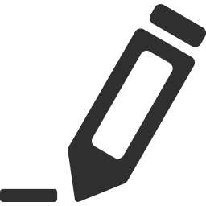

Projektowanie Stron
Jedną z moich umiejętności jest projektowanie stron. Głównie pracuje w HTML i CSS.
Projektowanie Gier
Kolejną moją umiejętnością jest projektowanie gier. Poza szkołą zajmuje się projektowaniem, jak i programowaniem gier.

Obróbka Zdjęć
Umiem też obrabiać zdjęcia, kiedyś chciałem zostać grafikiem, lecz jednak wybrałem programowanie.